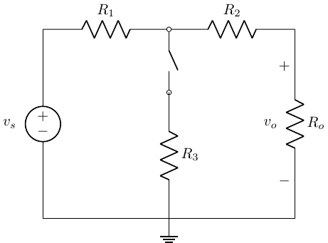
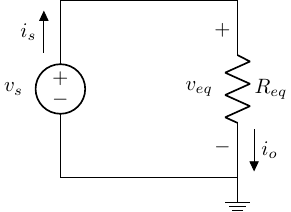

Switched, Series & Parallel Resistance
BME253L - Fall 2025
Learning Objectives
Solve [switched] resistive circuits.
Simplify series and parallel resistance networks \(\rightarrow\) equivalent resistance.
Review from Last Lecture
KCL, KVL & Ohm’s Law
Balance of Power
Resistive Loads
[Non-]ideal Sources
Measuring Voltage & Current
Analyzing Switched Resistive Circuit

Given:
- \(v_s\) = 300 V
- \(R_1\) = 100 \(\Omega\)
- \(R_2\) = 100 \(\Omega\)
- \(R_3\) = 200 \(\Omega\)
- \(R_o\) = 100 \(\Omega\)
Find \(v_o\) with both the switch open and closed.
We will start with the switch open case…
Step 1: Assign & Label Nodes, Voltage References & Currents
Use the (+) sign convention!

What does the open switch mean?
An open switch means no current can flow through \(R_3\)!

Step 2: KVL & KCL
KVL
\(D \rightarrow A \rightarrow B \rightarrow C \rightarrow D\)
\(-v_s + v_1 + v_2 + v_o = 0\)
KCL
\(A: i_s = i_1\)
\(B: i_1 = i_2\)
\(C: i_2 = i_o\)
So, \(i_s = i_1 = i_2 = i_o\)
This is one, closed-path loop!
Step 3: Apply Element Equations (Ohm’s Law)
Ohms’ Law
\(v_1 = R_1 i_s\)
\(v_2 = R_2 i_s\)
\(v_o = R_o i_s\)
Substitute voltage expressions into KVL expression, all in terms of \(i_s\):
\[ \begin{gather} -v_s + R_1 i_s + R_2 i_s + R_o i_s = 0 \\ v_s = i_s \left( R_1 + R_2 + R_0 \right) \end{gather} \]
Notice the sum of the resistors…
\[ \begin{gather} i_s = \frac{v_s}{R_1 + R_2 + R_3} = \frac{300 V}{300 \Omega} = 1 A \\ v_o = R_o i_s = (100 \Omega) (1 A) = 100 V \end{gather} \]
Step 4: Check Power Balanace
\[ \begin{gather} P = IV = I^2 R = \frac{V^2}{R} \\ \Sigma_n P_n = 0 \\ (-300 V)(1 A) + (1 A)^2(100 \Omega) + (1 A)^2(100 \Omega) + (1 A)^2(100 \Omega) = 0 ✅ \end{gather} \]
Next: Closed Switch
Step 1: Assign & Label Nodes, Voltage References & Currents

Step 2: KVL & KCL
KVL
\(D \rightarrow A \rightarrow B \rightarrow C \rightarrow D\)
- \(-v_s + v_1 + v_2 + v_o = 0\)
\(D \rightarrow A \rightarrow B \rightarrow D\)
- \(-v_s + v_1 + v_3 = 0\)
\(D \rightarrow B \rightarrow C \rightarrow D\)
- \(-v_3 + v_2 + v_0 = 0\)
KCL
\(A: i_s = i_1\)
\(B: i_1 = i_2 + i_3\)
\(C: i_2 = i_o\)
\(D: i_3 + i_o = i_s\)
Step 3: Element Constraints
\[ \begin{gather} v_1 = i_1 R_1 \\ v_2 = i_2 R_2 \\ v_3 = i_3 R_3 \\ v_o = i_o R_o \end{gather} \]
Next, start to solve!
Substitute current expressions into Ohm’s law relationships:
\[ \begin{gather} i_s = i_1 = i_3 + i_o \\ i_2 = i_0 \\ v_1 = R_1 \left(i_o + i_3\right) \\ v_2 = i_o R_2 \end{gather} \]
Substitute these expressions into KVL equations:
First KVL expression: \[ \begin{gather} -v_s + R_1 i_o + R_1 i_3 + i_o R_2 + i_o R_o = 0 \\ -v_s + i_o \left(R_1 + R_2 + R_o\right) + i_3 R_1 = 0 \end{gather} \]
Second KVL expression:
\[ \begin{gather} -v_s + R_1 i_o + R_1 i_3 + R_3 i_3 = 0 \\ -v_s + R_1 i_o + i_3 \left(R_1 + R_3 \right) = 0 \end{gather} \]
- Solve for \(i_3\) in the first expression and substitute it into the second expression:
\[ \begin{gather} i_3 = \frac{v_s - i_o \left(R_1 + R_2 + R_o\right)}{R_1} \\ -v_s + R_1 i_o + \left(\frac{R_1 + R_3}{R_1}\right)\left[ v_s - i_o \left(R_1 + R_2 + R_o\right)\right] = 0 \end{gather} \]
- Solve for \(i_o\) and \(v_o\):
\[ v_s \left[ -1 + \frac{R_1 + R_3}{R_1} \right] = i_o \left[ \frac{R_1 + R_3}{R_1} \left( R_1 + R_2 + R_o \right) - R_1 \right] \\ \]
\(v_s\) and all the \(R\) values are given, so: \[ \begin{gather} i_o = 0.75 A \\ v_o = i_o R_o = (0.75 A) (100 \Omega) = 75 V \end{gather} \]
Step 4: Check Power Balance
\[ \begin{align} P_1 & = (100 \Omega) \left( i_o + i_3 \right)^2\\ i_3 & = \frac{v_s - i_o\left(R_1 + R_2 +R_3\right)}{R_1} = 0.75 A \\ P_1 & = 225 W \\ P_2 & = (100 \Omega) i_o^2 = 56.25 W \\ P_3 & = (200 \Omega) i_3^2 = 112.5 W \\ P_o & = (100 \Omega) i_o^2 = 56.25 W \end{align} \]
Total Power Dissipated = 450 W
\[ \begin{align} P_s & = i_s v_s \\ i_s & = i_o + i_3 \end{align} \]
Total Power Generated: -450 W ✅
Simplifying Circuits: Series & Parallel Equivalent Resistance
Solving circuits with many components can quickly become cumbersome, especially if we don’t need to know the voltage and current associated with each individual circuit element.
We can simplify resistive networks (connections of resistors), using the following relationships:
Two resistors are considered to be in parallel if they share the same node on each of their connections (i.e., have the same voltage drop across them due to the same nodes).
Two resistors are considered to be in series if the same current flows through them through a common node.
Two circuits are considered electrically equivalent if they share the same I-V (current / voltage) relationship.
Let’s take a look at that open switch example…
Remember that \(i_s = i_1 = i_2 = i_o\)
- \(R_1\) is in series with \(R_2\), which is in series with \(R_o\); they are all in series with one another!
Remember applying KVL:
\(v_s = i_s \left(R_1 + R_2 + R_o\right)\).
This looks like Ohm’s law for a single resistor (\(R_{eq}\)): \(v_s = i_s R_{eq}\), where:
\(R_{eq} = R_1 + R_2 + R_o\)
Series Resistance
- If \(R_1, R_2, ... R_N\) are in series, then \(i_{R_1} = i_{R_2} = ... i_{R_N}\), which means:
\[ R_{eq} = \Sigma_{n=1}^N R_n \]

- Why is this useful? Way easier to solve for \(i_o\) in this case; it is just Ohm’s Law!
Voltage Division
What do series resistors do to a source voltage?

\(KVL: -v_s + v_i + v_2 = 0\)
\(KCL_{B}: i_1 = i_2\)
\(v_s = R_1 i_1 + R_2 i_1\)
\(i_1 = \frac{v_s}{R_1 + R_2}\)
\(v_1 = i_1 R_1 = v_s \frac{R_1}{R_1 + R_2}\)
\(v_2 = i_2 R_2 = v_s \frac{R_2}{R_1 + R_2}\)
Series resistors divide voltage in proportion to \(\frac{R_n}{R_{eq}}\)!
Common Uses of Voltage Dividers
Multiple Fixed Voltage Sources: Create smaller source voltages from a larger single source.
Signal Level Adjustment: Reduce a high voltage signal to a lower voltage level suitable for input to a measurement circuit.
Evaluate Impact of “Real” Voltage Source Impedance: Evaluate the parasitic voltage / power loses due to interal voltage source resistance.
Voltage division will be one of the most important circuit analyses we do in medical instrumentation.
Parallel Resistance Circuits

\(R_1\) & \(R_2\) share common nodes and have the same voltage drop across them, so they are in parallel.
KCL: \(i_s = i_1 + i_2\)
KVL: \(-v1 + v_2 = 0 \rightarrow v_1 = v_2\)
Ohm’s Law: \(i_1 = \frac{v_1}{R_1}\) and \(i_2 = \frac{v_2}{R_2} = \frac{v_1}{R_2}\)
What is \(R_{eq}\) for \(i_s\)?
\(i_s = v_1 \left( \frac{1}{R_1} + \frac{1}{R_2} \right)\)
\(v_1 = i_s R_{eq}\)
\(R_{eq} = \frac{R_1 R_2}{R_1 + R_2}\)
For \(N\) resistors in parallel:
\[ R_{eq} = \frac{1}{\frac{1}{R_1} + \frac{1}{R_2} + ... \frac{1}{R_N}} = \left( \Sigma_{n=1}^N \frac{1}{R_n} \right)^{-1} \]
Or in terms of conductance:
\[ G_{eq} = \Sigma_{n=1}^N G_n \]
Current Divider
What is the “fastest” way to solve for \(v_1\)?
Solve for \(R_{eq}\) and Ohm’s Law
\[ \begin{align} R_{eq} & = \frac{1}{\frac{1}{R_1} + \frac{1}{R_2}} \\ v_1 & = i_S R_{eq} \end{align} \]
What about \(i_1\) and \(i_2\)?
\[ \begin{align} i_1 & = \frac{v_1}{R_1} = \frac{i_S R_{eq}}{R_1} = i_S \frac{\frac{1}{R_1}}{\frac{1}{R_1} + \frac{1}{R_2}} \\ i_1 & = i_S \left(\frac{R_2}{R_1+R_2}\right) \\ i_2 & = i_S - i_1 \\ i_2 & = i_S \left( \frac{R_1}{R_1 + R_2} \right) \end{align} \]
The current in one branch is proportional to its conductance, which is proportional to the resistance in the alternate branch(es)!
Lets look at the limiting cases…
If \(R_2 \rightarrow 0\), then \(i_i \rightarrow 0\). In other words, current flows to the path of least (in this case, no) resistance.
If \(R_2 \rightarrow \infty\), then \(i_1 \rightarrow i_S\).
Physiology Analogs
Cardiovascular System
Parallel circuit - pulmonary capillary beds - very low resistance
Parallel & series circuit - arterial distribution via aorta
Neuro ventricular shunt - lower resistance
Pulmonary reactive airway disease
Summary
Solving for \(R_{eq}\) can greatly simplify circuits to “simple” loops for circuit analysis.
Voltage and current division are:
Reduce circuit analysis to “simple” circuit analysis rules.
Can be used to design circuits where voltage and current need to be controlled in specific ways.